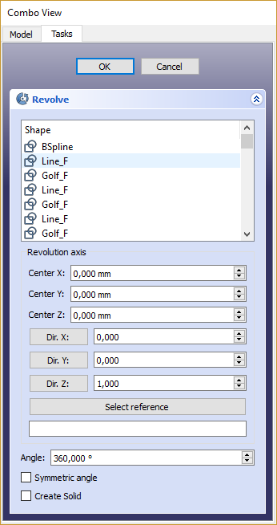

Part Revolve/cs
|
Part Orotovat |
| Umístění Menu |
|---|
| Part → Orotovat |
| Pracovní stoly |
| Part |
| Výchozí zástupce |
| Nikdo |
| Představen ve verzi |
| - |
| Viz také |
| Nikdo |
Popis
Příkaz  Part Orotovat otáčí vybraný objekt kolem zadané osy. Jsou povoleny následující typy tvarů, které vedou k uvedeným výstupním tvarům:
Part Orotovat otáčí vybraný objekt kolem zadané osy. Jsou povoleny následující typy tvarů, které vedou k uvedeným výstupním tvarům:
| Vstupní tvar | Výstupní tvar |
|---|---|
| Vrchol | Hrana |
| Hrana | Plocha |
| Drát | Skořepina |
| Plocha | Těleso |
| Skořepina | Složené těleso |
Jako vstupní objekty nemohou být použity tělesa nebo složená tělesa. Nemohou být použity ani běžné složeniny. Budoucí verze budou kontrolovat zda vybraný objekt není složený objekt.
{kind=link}
Example of revolution
Usage
- Optionally select one or more shapes in the 3D View or in the Tree View.
- There are several ways to invoke the command:
- Press the
 Revolve button.
Revolve button. - Select the Part → Revolve option from the menu.
- Press the
- The Revolve task panel opens.
- Optionally click on an item in the Shape list to (re-) select a shape.
- Optionally keep Shift pressed and click on an item in the Shape list to either add the shape to the selection, or to remove it from the selection.
- Set the revolution axis and angle and optionally other parameters (see Properties for more details).
- Press OK to close the task panel.
- One Revolve object will be created for each selected shape.
Each input shape is placed underneath its Revolve object.
Task panel
{kind=link}

- OK button creates the revolution, and closes the panel.
- Cancel button closes the panel, without doing anything.
- Shape list: here you select which shapes to revolve. If multiple objects are selected, multiple Revolve objects are created.
- Revolution Axis section: specifies the revolution axis.
- Center X/Y/Z fields: set the base point of the revolution axis.
- X-/Y-/Z-Direction fields: set the direction of the revolution axis. Click a button to set the direction to corresponding axis.
- Select Reference button: click it, and then pick an edge in the 3D View. That edge will appear in text field below the button, in the format "ObjectName:EdgeN". You can also type the link manually or erase it. Values X-/Y-/Z-Direction will be filled according to the edge direction.
- Angle field: set angle of revolution in degrees.
- Symmetric angle: if checked, revolution will extend forwards and backwards by half the specified angle.
- Create solid checkbox: if checked, revolving a closed wire or edge will yield a solid. It is checked by default, if a closed wire was preselected before invoking Part Revolve.
Notes
- The Angle argument specifies how far the object is to be turned. The coordinates move the origin of the axis of revolving, relative to the origin of the coordinate system.
- If you select a user defined axis, the numbers define the direction of the revolving axis with respect to the coordinate system: if the Z-coordinate is 0 and the Y and X-coordinates are non-zero, then the axis will lie in the X-Y plane. Its angle is such that its tangent is the ratio of the given X and Y-coordinates.
- App Link objects linked to the appropriate object types can also be used as shapes and to specify the axis.
- If the object to revolve intersects the rotation axis the operation will fail in most cases.
Properties
See also: Property View.
A Part Revolve object is derived from a Part Feature object and inherits all its properties. It also has the following additional properties:
Data
Extrude
- ÚdajeSource (
Link): The shape to revolve. - ÚdajeBase (
Vector): The base point of the revolution axis. - ÚdajeAxis (
Vector): The direction of the revolution axis. - ÚdajeAxis Link (
LinkSub): Link to the edge to use as the revolution axis. Overrides ÚdajeBase and ÚdajeAxis if set. - ÚdajeAngle (
Angle): The angle span of the revolution. If zero and an arc is used for the ÚdajeAxis Link, the arc's span will be used. - ÚdajeSymmetric (
Bool): If true, the revolution is extended symmetrically from the profile. - ÚdajeSolid (
Bool): If true, revolving a closed edge or a closed wire will yield a solid. If False, a shell will result. - ÚdajeFace Maker Class (
String): If ÚdajeSolid is true, the facemaker class to use when converting wires to faces, otherwise ignored.
- Creation and modification: New Sketch, Extrude, Revolve, Mirror, Scale, Fillet, Chamfer, Face From Wires, Ruled Surface, Loft, Sweep, Section, Cross-Sections, 3D Offset, 2D Offset, Thickness, Project on Surface, Appearance per Face
- Boolean: Compound, Explode Compound, Compound Filter, Boolean Operation, Cut, Union, Intersection, Connect Shapes, Embed Shapes, Cutout Shape, Boolean Fragments, Slice Apart, Slice to Compound, Boolean XOR, Check Geometry, Defeaturing
- Other tools: Box Selection, Shape From Mesh, Points From Shape, Convert to Solid, Reverse Shapes, Simple Copy, Transformed Copy, Shape Element Copy, Refine Shape, Set Tolerance, Persistent Section Cut, Attachment
- Preferences: Preferences, Fine tuning
- Getting started
- Installation: Download, Windows, Linux, Mac, Additional components, Docker, AppImage, Ubuntu Snap
- Basics: About FreeCAD, Interface, Mouse navigation, Selection methods, Object name, Preferences, Workbenches, Document structure, Properties, Help FreeCAD, Donate
- Help: Tutorials, Video tutorials
- Workbenches: Std Base, Assembly, BIM, CAM, Draft, FEM, Inspection, Material, Mesh, OpenSCAD, Part, PartDesign, Points, Reverse Engineering, Robot, Sketcher, Spreadsheet, Surface, TechDraw, Test Framework
- Hubs: User hub, Power users hub, Developer hub